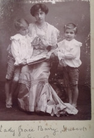
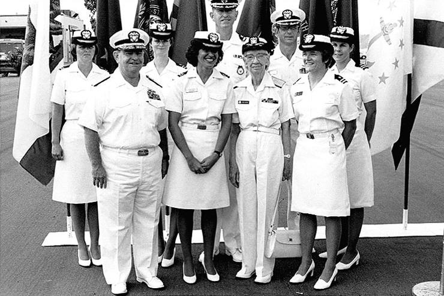
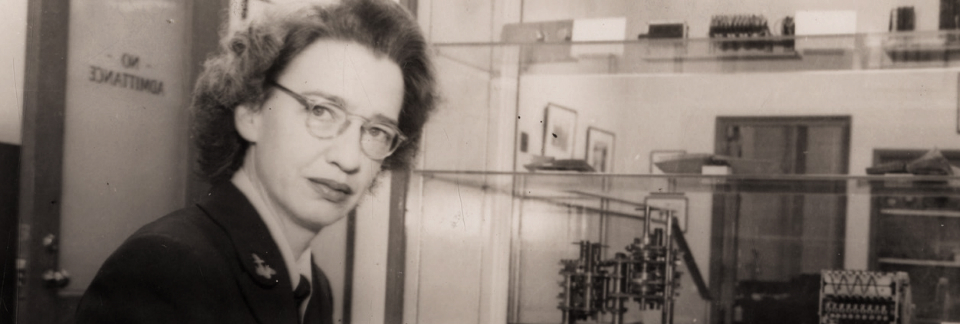

Vida Temprana
Grace Brewster Murray Hopper (1906–1992) fue una pionera de la informática y oficial naval. Obtuvo una maestría (1930) y un doctorado (1934) en matemáticas en Yale. Hopper es conocida por sus contribuciones pioneras a la programación informática, el desarrollo de software y el diseño e implementación de lenguajes de programación. Inconformista e innovadora, disfrutó de una larga e influyente carrera en la Marina de los Estados Unidos y en la industria informática.
Hija de Walter Fletcher Murray y Mary Campbell Van Horne, Grace nació en 1906 en Nueva York. Su padre era dueño de una compañía de seguros. En 1928, se graduó con títulos en matemáticas y física. Tras obtener su maestría en Yale, comenzó a enseñar en Vassar mientras cursaba el doctorado, que completó en 1934.
Servicio en la Marina
Tras el bombardeo de Pearl Harbor y la entrada de Estados Unidos en la Segunda Guerra Mundial, Hopper decidió unirse al esfuerzo bélico. Inicialmente fue rechazada por su edad y baja estatura, pero persistió y finalmente recibió una exención para unirse a la Reserva Naval de los Estados Unidos (Reserva Femenina). En diciembre de 1943, se tomó una excedencia de Vassar, donde era profesora asociada, y completó sesenta días de entrenamiento intensivo en la Escuela de Guardiamarinas para Mujeres del Smith College de Northampton, Massachusetts.
Tras recibir su nombramiento (teniente subalterno), Hopper fue asignada al Proyecto de Cálculo de la Oficina de Buques de la Universidad de Harvard. Allí, se unió a un equipo que trabajaba en la Calculadora Automática de Secuencia Controlada de IBM, más conocida como MARK I, la primera computadora electromecánica de Estados Unidos. Bajo la dirección de Howard Aiken, quien había desarrollado la MARK I, Hopper y sus colegas trabajaron en cálculos ultrasecretos esenciales para el esfuerzo bélico: calcular trayectorias de cohetes, crear tablas de alcance para nuevos cañones antiaéreos y calibrar dragaminas. Hopper, una de las tres primeras "codificadoras" (ahora conocidas como programadoras), también escribió el manual de usuario de 561 páginas de la MARK I.
Tras el fin de la guerra, Hopper rechazó una cátedra en Vassar para continuar su trabajo con computadoras. En 1946, abandonó el servicio activo cuando la Armada rechazó su solicitud de ascenso regular debido a su edad, pero permaneció como reservista naval. De 1946 a 1949, continuó trabajando en las computadoras MARK II y MARK III bajo contratos de la Armada. Al finalizar su periodo de tres años como investigadora, dejó Harvard porque no había plazas permanentes para mujeres.
Profesora y comunicadora
Hopper no solo fue una brillante matemática e informática, sino también una talentosa profesora y comunicadora. Aunque dejó su puesto en la facultad de Vassar para unirse a la Marina, la docencia siguió siendo una parte importante de su vida. En 1959, Hopper fue profesora visitante y luego adjunta en la Escuela Moore de Ingeniería Eléctrica de la Universidad de Pensilvania. En las décadas de 1960 y 1970, impartió clases y conferencias en Pensilvania, la Universidad George Washington y para la Reserva Naval de los Estados Unidos. Fuera del ámbito académico, organizó numerosos talleres y conferencias para promover la comprensión de las computadoras y la programación. En sus palabras al aceptar la Medalla Nacional de Tecnología, Hopper dijo:. «Si me preguntan de qué logro estoy más orgullosa, la respuesta sería de todos los jóvenes que he formado a lo largo de los años; eso es más importante que escribir el primer compilador».

El talento de Hopper como docente también la ayudó a comunicarse con una amplia variedad de públicos: expertos técnicos, ingenieros, líderes empresariales, procesadores de datos, jóvenes y el público en general. Ayudó a persuadir a sus clientes empresariales del valor de adoptar nuevas tecnologías, y su biógrafo Kurt Beyer la describe como una "portavoz de la industria informática en constante evolución" en la década de 1950.Hopper desempeñó un papel similar para la Armada. De 1977 a 1986, fue "la principal propagandista de la Armada para su programa informático, como... [su] representante ante sociedades científicas, asociaciones industriales y simposios técnicos". [viii] En los últimos años de su vida, realizó un trabajo similar de relaciones públicas para Digital Equipment Corporation. A lo largo de su carrera, Hopper valoró enormemente la capacidad de explicar situaciones y problemas complejos a públicos muy diversos. "He llegado a creer que no sirve de nada hacer nada si no se puede comunicar", declaró en una entrevista de 1980.
Su recuerdo
Hopper alcanzó la mayoría de edad en una época de oportunidades excepcionales para las mujeres. Un número relativamente alto de mujeres se doctoraban en las décadas de 1920 y 1930, cifras que no se igualarían hasta la década de 1980. La Segunda Guerra Mundial también generó mayores oportunidades para que las mujeres se incorporaran al mercado laboral. No obstante, su éxito en un campo y en organizaciones dominados por hombres, como la Marina de los Estados Unidos, fue excepcional.
Optimista y visionaria, Hopper celebró el potencial de las computadoras. "Creo que constantemente subestimamos lo que podemos hacer con las computadoras si realmente lo intentamos", dijo en una ocasión. En una entrevista de 1983 en "60 Minutes", el presentador Morely Safer preguntó si la revolución informática había terminado. Hopper respondió: "No, solo estamos al principio... Tenemos el Modelo T". Hasta el final de su vida, la contralmirante Grace Hopper miró con confianza las nuevas tecnologías y su capacidad para resolver problemas.
Tras su fallecimiento en 1992, fue ampliamente reconocida. En 2016 recibió la Medalla Presidencial de la Libertad. Grace Hopper es conocida como la “madre de la programación” por hacer que la computación fuera accesible más allá del ámbito científico.
